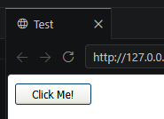
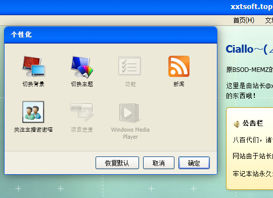
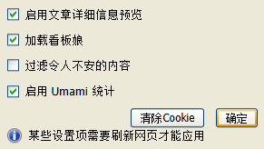

相信大家已经发现本站新增WindowsXP Luna主题了。WindowsXP是一个经典的操作系统，也是我的童年回忆，我想用现代CSS技术还原其独特的审美风格，以下是我钻研的过程，希望能给大家一点启发。
观察

这是一个标准的WindowsXP对话框，此时我正把鼠标指针放在“取消”按钮上（普通按钮的Hover状态）
我们注意到无论是主要按钮（“确定”按钮）和焦点状态的普通按钮，都具有黑蓝色的窄外边框和带有渐变光泽的内边框，那如何做出这种双层边框效果呢？
也许你会想到使用border再加outline属性，但很可惜，border用outline效果不尽人意，那border能不能加上linear-gradient呢？答案也是不行的。
那么我们就需要使用伪元素来实现了，再配合 WebKit 的遮罩（mask），来实现一个镂空的高亮边框效果，鼠标移上去的时候会变成金色的渐变。
最基础的按钮
.xpbutton {
position: relative;
border-radius: 3px;
cursor: pointer;
padding: 4px 18px;
font-size: 12px;
font-family: "Tahoma", "SimSun", sans-serif;
background: linear-gradient(to bottom, #fff 0%, #ECEBE6 90%, #D6D0C5 100%);
border: 1px solid #003C74;
color: #000;
overflow: hidden;
}
这是按钮的基本样式，使用了线性渐变背景和边框颜色。

欸，你看，是不是很像？
加上伪元素
.xpbutton::before {
content: "";
position: absolute;
inset: 0;
border-radius: inherit;
padding: 2px;
-webkit-mask: linear-gradient(#fff 0 0) content-box, linear-gradient(#fff 0 0);
-webkit-mask-composite: xor;
mask-composite: exclude;
pointer-events: none;
}
::before 是一个伪元素，它不会出现在HTML里，是CSS自动生成的。我们用它在按钮上面加了一层“透明的罩子”，专门用来做边框效果。
伪元素必须有content属性才能显示，这里直接留空就好啦；同时，我们要设置pointer-events来确保伪元素不会挡住鼠标，影响按钮的交互。
遮罩的魔法
这里的-webkit-mask是浏览器的遮罩功能，用来控制元素哪些部分显示、哪些部分被隐藏。我们给伪元素加了两个遮罩：一个是整个区域，一个是中间的内容区域。
-webkit-mask-composite: xor; mask-composite: exclude; 的意思是把两个遮罩区域取交集然后挖掉，也就是只显示边框部分。
发光
给伪元素添加一个渐变背景就好了
.xpbutton:hover::before {
background: linear-gradient(to bottom, #FCD279, #E59700);
opacity: 1;
}
最终效果
是不是很像WindowsXP的按钮呢？
新的按钮样式我也很快应用到网站上，整体确实比较协调，就是这个窗框还不是很还原（按理来说xp窗口左右和底部都有蓝色粗边框，并且标题栏也还不是很像）这些细节我后面慢慢磨

